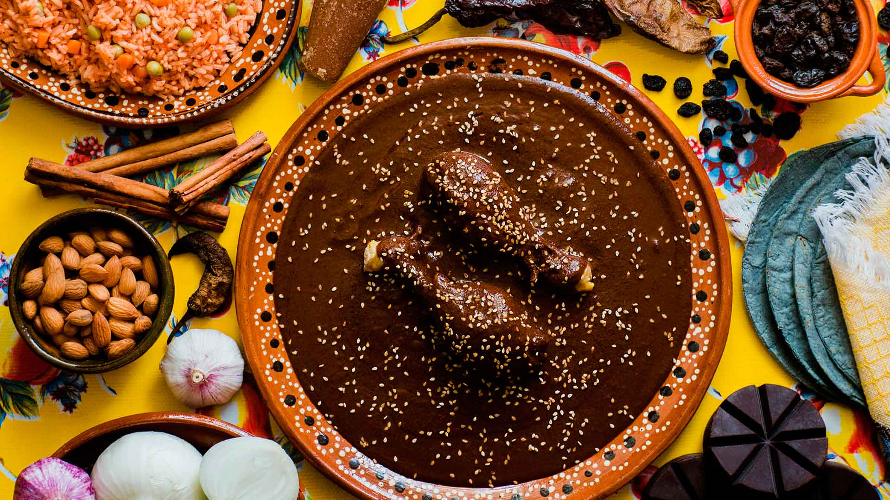
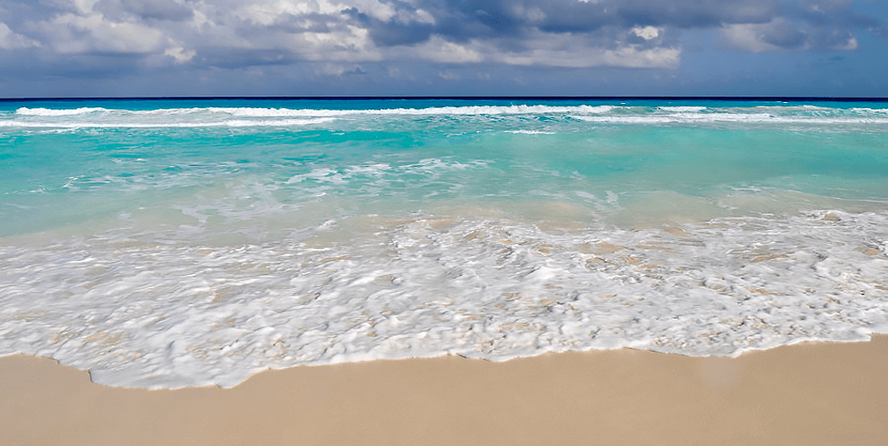

| Gastronomia | Restaurantes |  |
| Sindrerias | ||
| Bodegas de vinoo y txakoli |  |
|
| Productos tipicos | ||
| Escuelas de hosteleria | ||
| Cultura | Archivos y bibliotecas |  |
| Museos | ||
| Palacios de congresos | ||
| Ferias de muestras | ||
| Ocio | Entretenimiento y diversion |  |
| Ocio cultural | ||
| Excurciones y deporte |